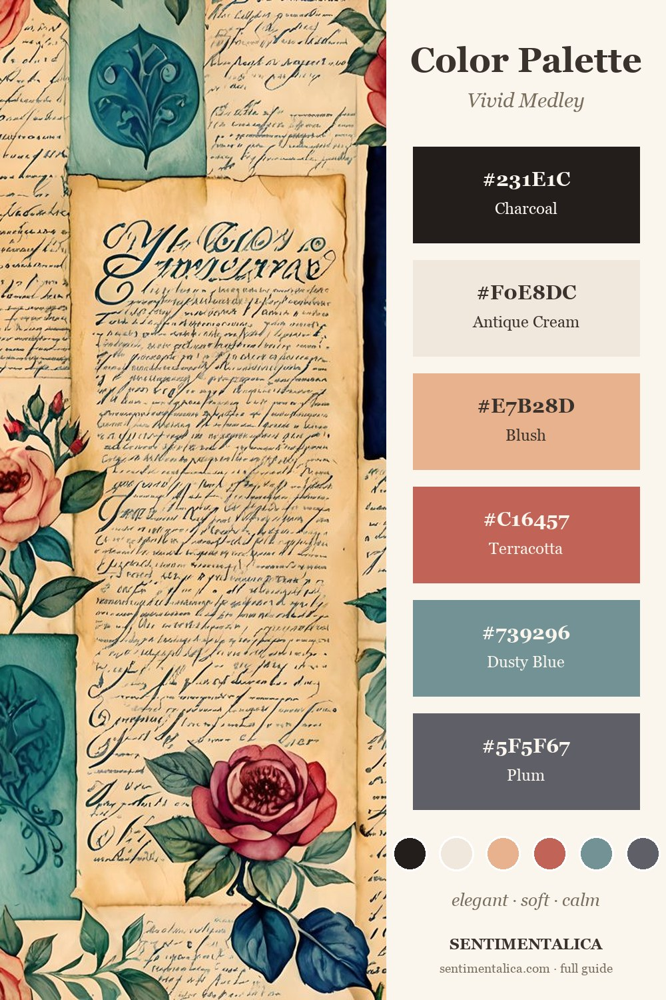
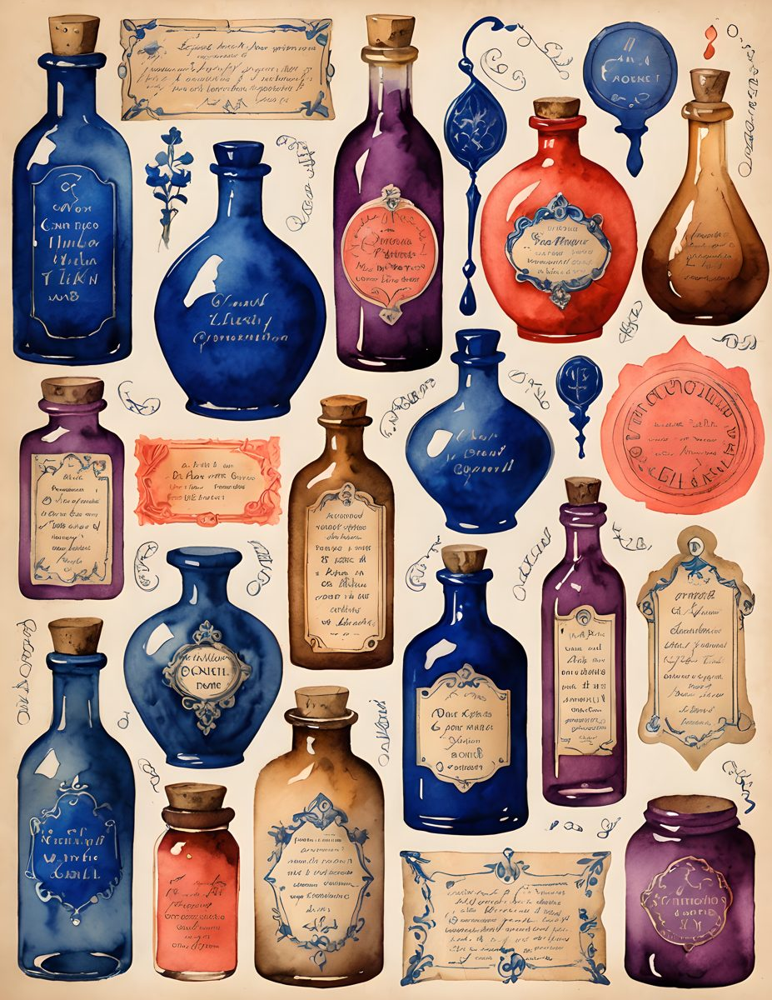

A good junk journal palette is not just a set of pretty colors. It tells you what to repeat, what to keep quiet, and when the page has enough.

Let Dusty Blue Calm the Warm Colors
Vivid Medley has plenty of warmth: blush, terracotta, old paper, and handwritten cream. Dusty blue keeps those colors from becoming too sweet. Use it as a ribbon, a backing strip, a label, or the one repeating accent across the spread.
Use Terracotta in Small Repeats
Terracotta works best when it appears three times: one flower, one torn edge, one tiny tab. Too much terracotta can flatten the page, but a few repeats make the whole spread feel awake.
Keep Antique Cream as the Breathing Space
The cream parts of the page are not empty. They are what let the darker blue and plum feel intentional. If the spread starts feeling crowded, add one cream scrap before adding another decorative piece.


Try the Palette With the Actual Pages
If you want a ready base for this color story, start with the Vivid Medley pages and add your own lace, notes, ribbons, or saved scraps on top. Save the palette card first, then build the page from one color repeat at a time.